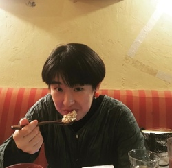
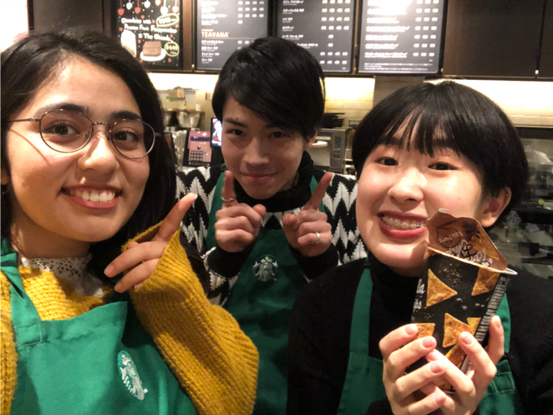

- about -

小田島 萌衣(おだしま めい)
- 生年月日：1998年9月14日
- 出身：岩手県
- 血液型：A型
- 好きなもの：お洒落・カフェ巡り・旅行
- 最近はまっているもの：ショートカットキーを調べること
- わたしを一言で表すと？：容量が良い0 ,100人間
- stories -
ようこそわたしの作り上げた紹介サイトへ！わたしの大学生活をちょこっと紹介

スタバイトの話
スターバックスコーヒーで約3年半アルバイト。上京して間もない頃、追い討ちをかけるように膨大なレシピの暗記を求められ精神的苦痛に襲われたものの、早くカウンターに立って接客をしたいという思いから通常１カ月かかると言われているレシピを１週間半で覚えた。
最初に勤務していた店が潰れたため、大学生ではあまりない２店舗での勤務を経験。勤務４日目でやったことのないポジションをして失態するも、他のスタッフの動きを観察し克服する。

スラムに１週間住んだ話
大学1年生の夏、フィリピン・レイテ島にある村で村人と1週間過ごす。水も井戸水、電気がない村で過ごす中で他国の貧困を痛感しつつ、そこで暮らす人たちが楽しそうに暮らしている姿を目の当たりにし、貧困＝かわいそうと思っていたイメージを覆される。国際関係の勉強をしに国際学部に入学するも、この経験から日本の地方衰退に興味を持つようになる。
しかしその後も、新しい世界を知るために計10カ国を周る。1番印象深かった国はモロッコ。

YouTuberになった話
地元岩手のゲストハウスのインターンシップに参加し、YouTuberとなる。そこで地元の魅力を自らが選定し、企画から撮影、編集、動画のアップロードを1人でこなす。動画編集スキルが皆無だったため、YouTubeの動画を永遠ループし、テロップの入れ方、効果音、カットの仕方を独学で学び10本の動画を作成する。
自身の「伝えたい」と相手の「知りたい」をマッチさせることが難しく、大きな効果には繋がらなかったものの、こういったサービスを使うことで世界中の人に発信をすることができるITの無限の可能性に興味を持つようになる。